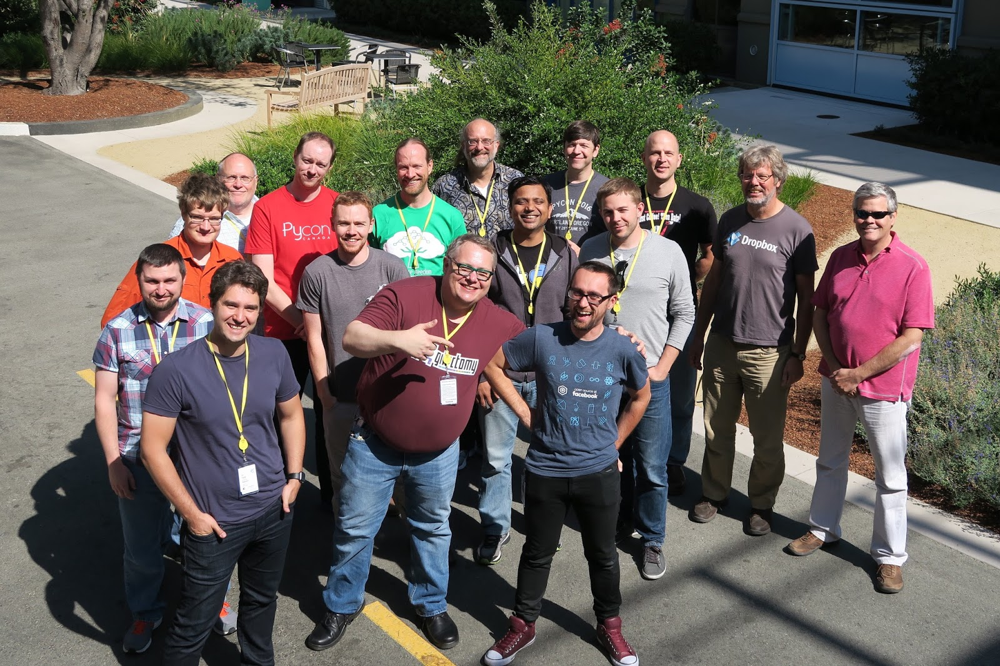

Making OSS Library
How is it look like?
Andrew Svetlov
http://asvetlov.blogspot.com
andrew.svetlov@gmail.com
http://asvetlov.github.io/oss-lviv-2017/
Bio
- Using Python for 17+ years
- Python Core Developer
- aio-libs
- aiohttp
- aiopg
- multidict
- ...
What to invent?
The wheel?
Non-round wheel

Life cycle
- Create github project
- Write code
- Make it working
- Publish on PyPI
- Profit???
Criterias
- Solve real life problem
- Smooth learning curve
- High quality
Testing
Manual
All kinds of automated tests
- Unit
- Funcional
- Integration
Continuous integration
- travis-ci.org
- appveyor.com
- circleci.com
Run tests on every Pull Request
Test coverage
Strive to 100% with branch cov enabled
Use codecov.io or coveralls.io
Collect data on every CI run
Documentation

Love to read
Hate to write
Use Sphinx
sphinx-doc.org
Make narrative docs
Avoid autodocs
Steal best ideas
- docs.python.org
- docs.djangoproject.com
- flask.pocoo.org
Community
Dream
Hope

Reality
Communication & feedback
- Bug tracker
- Google Group
- Chats (gitter, slack, etc.)
- Stack Overflow
- Reddit :)
Source Code
Targets
- Evolvement
- Stability
- Backward compatibility
Public Facade
Minimalistic API
Hide implementation details
class A:
attr1 = 1
attr2 = "val"
def meth(self): ...
def other(self): ...
class A:
_attr1 = 1
_attr2 = "val"
@property
def attr1(self):
return self._attr1
@attr1.setter
def attr1(self, val):
if not isinstance(val, int):
raise TypeError(...)
self._attr1 = val
def meth(self): ...
def _other(self): ...
Public API ≡ Documented API
Throubles with feature documenting — bad smell.
Readability
Write once — read permanently
Be Pythonic
Say no to overusage of Python magic
Ducktyping is semi-evil
Final classes + interfaces
vs
Inheritance
Deprecation
import warnings
def func():
warnings.warn("Use func2() instead",
DeprecationWarning,
stacklevel=2)
func2()
def func2(): ...
Contributors are power
Questions?
Andrew Svetlov
http://asvetlov.blogspot.com
andrew.svetlov@gmail.com
http://asvetlov.github.io/oss-lviv-2017/